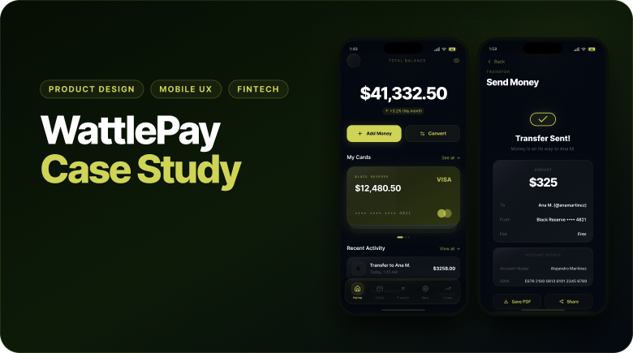
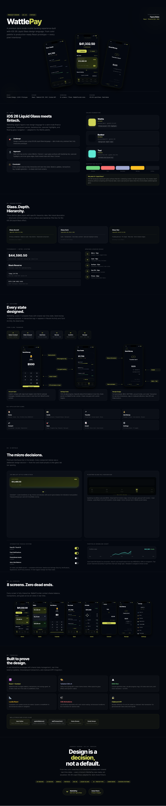

Design a premium mobile banking concept using a dark UI, liquid glass visual language and complete fintech interactions.
Case study / Mobile fintech
A premium dark-mode wallet experience with complete product behavior.
WattlePay explores how a mobile banking product can feel polished, trustworthy and alive: liquid glass surfaces, clear financial hierarchy, complete money flows and a working React prototype.
Product Design
Mobile UX
Fintech
Liquid Glass UI
React Prototype

Product Designer across UI direction, UX flows, visual system, interaction states and prototype behavior.
Eight screens, seven complete flows, shared wallet state, real-time balance updates and production-oriented React components.
Story
Not a static banking mockup. A product prototype with working logic.
The goal was to move beyond a polished screen set and design the behavior behind the interface. Sending money, adding savings, converting currency and reviewing activity all needed to feel connected through shared state.
I treated the visual system as part of the product logic: glass layers communicate hierarchy, accent colors signal action, and financial data stays readable inside a dense dark-mode interface.
01 / Visual System
Dark-mode fintech with a controlled glass hierarchy.
The interface uses a narrow palette built around a dark base, a sharp Wattle accent and selective teal moments for portfolio data. Glass surfaces are not decorative: each layer has a hierarchy role.
- Defined accent, base, chart and supporting color roles.
- Used glass layers for primary containers, lists and navigation.
- Kept financial data high-contrast and easy to scan.

02 / UX Flows
Every main action was designed as a complete flow.
The prototype covers home, cards, transfer, add money, convert, savings, invest and settings. The transfer flow includes contact selection, amount entry, optional note, review, confirmation and receipt.
- Designed seven connected flows with no dead-end screens.
- Used real-time state so balances, goals and activity update together.
- Included receipts, bank details, transaction IDs and save/share actions.
03 / UI Details
Premium interfaces live in the small interaction decisions.
The case study includes wallet-style card stacks, floating glass navigation, interactive toggles and SVG chart components. Each detail supports usability, hierarchy or product confidence.
- Card stack with active-card elevation and visual feedback.
- Floating tab bar with blur, inset shadow and active states.
- Toggle, chart and goal components built as reusable patterns.
Layered depth
Translucent panels, blur and edge highlights create hierarchy without overpowering financial content.
Real behavior
Balances, transactions and savings goals update through shared state rather than static mock screens.
Readable finance UI
Large amounts, tabular numbers, labels and metadata are treated as core UI decisions.
Useful feedback
Animation supports card states, transfers, navigation and confirmation moments without becoming decoration.
04 / Prototype
Built to prove the design, not just present it.
The prototype was built with React, Tailwind CSS and SVG components. WalletProvider manages balances, transactions and savings goals, so product behavior stays consistent across screens.
- React Context for shared wallet state.
- SVG-first charts, progress rings and interface details.
- Clipboard actions, generated transaction IDs and timestamped activity.